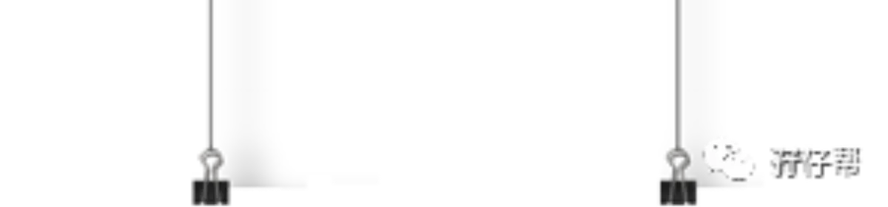
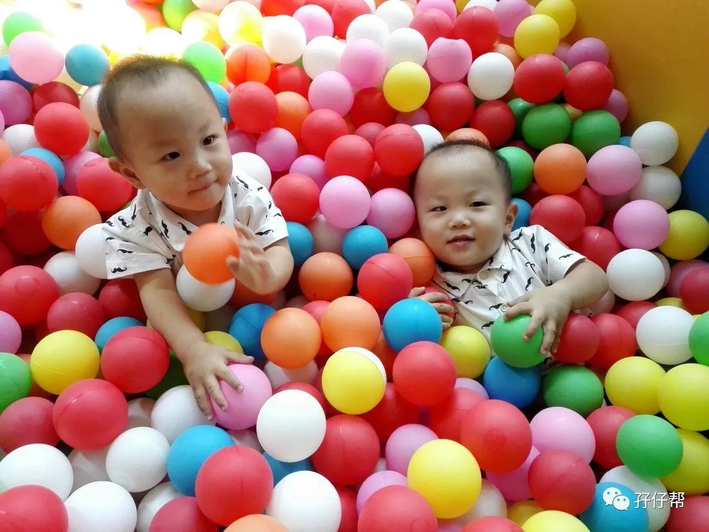
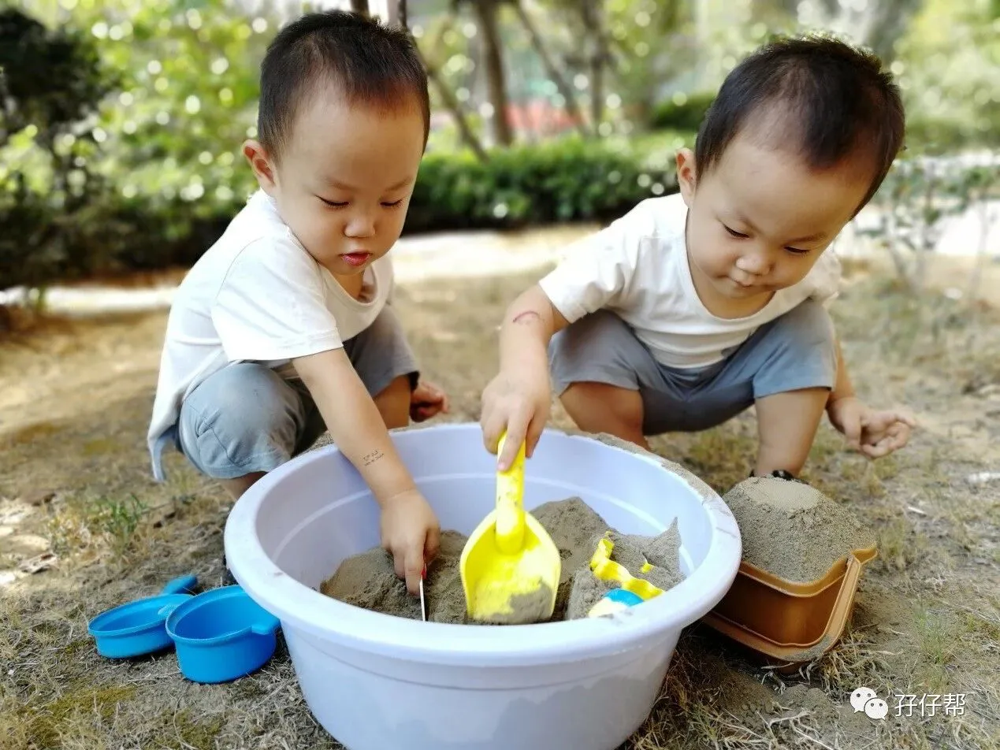
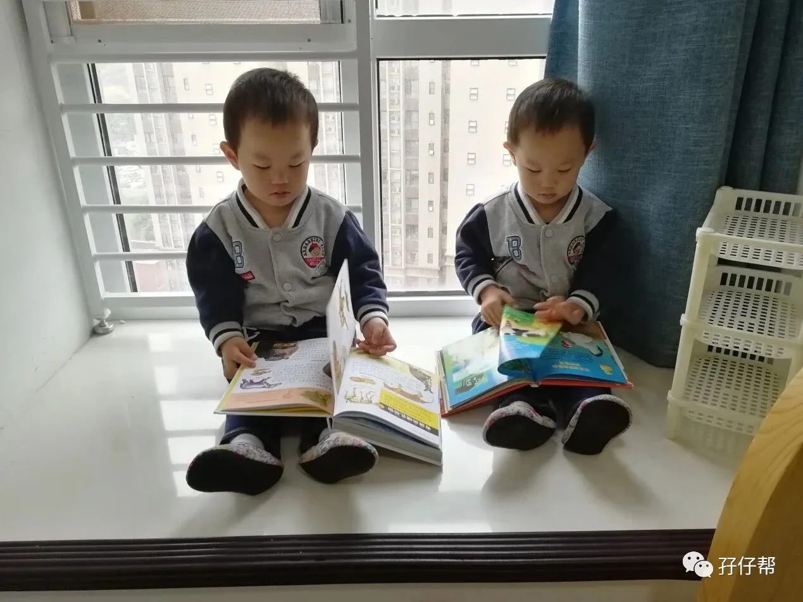
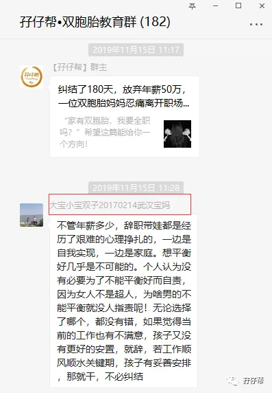

【帮主】圆圈妈妈：
这是孖仔帮双胎专栏【孖妈来了】的第四篇文章，来自双胞胎大小宝妈妈（这是另外一位双胞胎大小宝妈妈！囧！这重名率太高了！）的投稿。
大小宝妈妈是一名幼师，她没有当妈妈之前，每天就要面对一群熊孩子，这一口气来了两个自己的孩子，那会是怎样的体验呢？
· 正 · 文 · 来 · 啦 ·
双胞胎大小宝妈妈@齐：
大宝小宝出生以前，我一直在幼儿园上班，每天给三十几个孩子当“妈”，忙忙碌碌，十年如一日，我爱孩子，也爱我的工作。然而随着双胞胎兄弟俩的到来，这一切就彻底改变了！
这篇文章是分享我初为人母，刚上任双胞胎妈妈的一段心路历程！
有我的产后忧郁史也有我为人母的成长蜕变，还有我作为幼师对双胞胎孩子们教育上的一些心得体会。
【01】
双胞胎来了，我的悲伤逆流成河
双胞胎的到来总是喜忧参半：惊讶，激动，被人羡慕……短暂的喜悦之后，满地的纸尿裤和手术后的各种不适将我一棒子打醒。
那个在幼儿园叱咤风云，从实习生做到业务园长，雷厉风行的齐老师不见了。
疲倦和无助将我打入人生最低谷，婆媳矛盾，产后抑郁，夫妻关系冰点，辞职……所有戏剧性的情节我一个也没落下，我觉得全世界都对不起我。
孩子一岁多时，有一天我坐在飘窗上拼命的哭到半夜，对着老公将我这些年所有的委屈都发泄出来了，我的抑郁也在那一晚彻底终结。
第二天清晨，我看到阳光透过窗户，洒在大宝小宝熟睡的脸上，如此温暖，如此安静，那一刻我仿佛得到了重生。
消极和放弃从来都不是我的人设！
之后我做过一年的私房烘焙，卖纸尿裤，卖童装，参加自考本科，买书，学习育儿知识，记录孩子的成长。
看着大宝小宝一天天长大，走路，说话，唱歌，跳舞，我的自信终于回来了！
【02】
双胞胎的非常教育：理解和信任
对于大宝小宝，很多邻居和朋友都说他俩乖，说我教的好，每次我在前面走，他们在后面自觉跟着，玩过沙子知道自己收玩具。
说来惭愧，我也走过很多弯路，边学习边摸索吧。
我大概就一个宗旨：顺其自然，再就是注意观察，发现孩子的敏感期，尽可能提供所需环境材料，充分理解孩子所有的行为。
我觉得理解和溺爱是两回事！
孩子哭，闹，想吃零食，想看电视，想尝试成人的所有工具，玩儿成人觉得所有的危险品等等等等，我都会理解他们，成人尚且如此，更何况是孩子。
我理解，更相信他们，越是如此，他俩越是没让我失望过。
【02】
双胞胎的非常教育：爱和自由
两岁三个月时，我发现他俩对家里的剪刀感兴趣，我就不顾所有人的反对买了儿童剪刀让他们剪，并告知注意事项，没想到兄弟俩练习了一个月居然灵活自如了，看着雪花一样的纸片，我突然感慨万千，我能做的就是提供足够的纸和剪刀 ，之后扫一扫。
还有切水果，成人认为最危险不可触碰的东西，孩子就越是想要探索，不如成全他们，半年过去了，他俩从未伤到过手。
他们想看电视了，我就打开让他们看，如果感觉时间有点长了，就拿出书或者玩具或者说出去滑滑梯，他俩不撒泼不打滚就要求关电视。
玩具玩过后，在我的提醒下会自己严格分类收好，有时不愿收也不强迫，但看到他爸爸放错了就非要换回来。
双胞胎哥俩的日常生活：看绘本，要求讲书，切水果吃饼干，看电视，听音乐唱歌，剪纸画画，玩玩具，玩沙玩石头...
双胞胎妈妈的日常生活：洗衣做饭，准备玩具材料，复习考试...别问我哪儿来的时间复习，说多了也都是泪。
虽不能上班，但我把孩子入园以前这三年时光当作是重塑自己的机会，我会珍惜并乐在其中。
双胞胎大小宝妈妈寄语：
最后，想和各位双胞胎宝妈们分享的是，我们一定不能沉迷于日常带娃琐事，否则多半会抑郁，自寻烦恼，直到失去自我。
每个妈妈在生娃前，也都是有梦想的人，孩子出生后，我觉得更不应该放弃，上班不成，可以换个方式来实现。
譬如我，决定先提升学历，趁机复习，明年孩子上幼儿园了，我决定考研，孩子爸非常支持，他自己也在读在职研究生，一家四口一起上学，想想都觉得挺不错的，噗哈哈。
三十岁的老阿姨考研，希望大家不要笑我才好，嘻嘻～～
圆圈妈妈有话说
双胞胎大小宝妈妈在孖仔帮的双胞胎教育群，她在群里分享了一段话，我觉得非常赞，截图分享给大家，与之共勉。
不管年薪多少，辞职带娃都是经历了艰难的心理挣扎的，一边是自我实现，一边是家庭。想平衡好几乎是不可能的。
个人认为没有必要为了不能平衡好而自责，因为女人不是超人，为啥男的不能平衡就没人指责呢！
无论选择了哪个，都没有错！
如果觉得当前的工作也有不满意，孩子又没有更好的安置，就辞！
若工作顺风顺水关键期，孩子有妥善安排，那就干，不必纠结！
的确！
家有双胞胎，全职在家带娃还是继续拼搏在职场，一直是每一位双胞胎妈妈短时间内难以迈过的一道坎！
之前的推文《家有双胞胎，我要辞职带俩娃吗？》《致敬双胞胎妈妈：燕雀安知鸿鹄之志》有提到我的一些看法，有这方面纠结的妈妈们可以参考下！
曾有读者留言说，女性的价值并不仅仅体现在养育孩子上。
在我的双胞胎没有出生之前，我的确是这么认为的！独立自主的女性就应该在职场上叱咤风云才能体现女性的真正价值。
然而，一口气来了双胞胎后，我觉得，孩子们最需要妈妈在的时候，我正好在，并及时回应他们爱的呼唤，那就是我的价值所在！
还有，是谁说当了全职妈妈就会失去女性的价值？除非你只想做一条咸鱼！
-END-
今日互动话题
#当妈后，你还想做点啥重塑自己？#
评论区聊一聊呗！
一关注孖仔帮一




